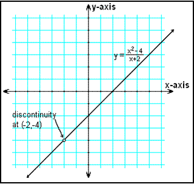

Continuity & End Behavior
Homework
|
 | ||||||
|
||||||
| Discontinuity occurs at asymptotes & holes | ||
|---|---|---|
| Infinite Discontinuity | Jump Discontinuity | Point Discontinuity |
| Discontinuity occurs at asymptotes & holes | ||
|---|---|---|
| Infinite Discontinuity | ||
| Jump Discontinuity | ||
| Point Discontinuity | ||
A function is continuous (cts) if it's cts for each pt on that interval
Ex) Determine if the following graph has infinite, jump or point discontinuity, or is continuous (*note* discontinuity occurs at asymptotes & holes)
$y={x^2-x-6}/{x-3}$
$\text"Hole"→{(x+2)(x-3)}/{x-3}→x=3$
$\text"H.A."→\lim↙{≠∞}{x^2-x-6}/{x-3}=\lim↙{≠∞}{1-1/x-6/{x^2}}/{1/x-3/{x^2}}=1/0=\text"dne"$
$\text"S.A."→y={x^2-x-6}/{x-3}→y=x+2→dne$
The graph is $y=x+2$ with a hole at $x=3$
Ex) Determine if the following graph has infinite, jump or point discontinuity, or is continuous (*note* discontinuity occurs at asymptotes & holes)
$y={x^2-x-6}/{x-3}$
$\text"Hole"→{(x+2)(x-3)}/{x-3}→x=3$
$\text"H.A."→\lim↙{≠∞}{x^2-x-6}/{x-3}=\lim↙{≠∞}{1-1/x-6/{x^2}}/{1/x-3/{x^2}}=1/0=\text"dne"$
$\text"S.A."→y={x^2-x-6}/{x-3}→y=x+2→dne$
The graph is $y=x+2$ with a hole at $x=3$
End Behavior - what happens to $f(x)$ as x approaches ≠∞
Ex) Describe the end behavior of $f(x)=x^3$
| $\lim↙{x→+∞}x^3=+∞$ | |
| $\lim↙{x→-∞}x^3=(-x)^3=-∞$ | |
| $\table \text"as "x→-∞\text","; f(x)→-∞$ | |
| $\table \text"as "x→+∞\text","; f(x)→+∞$ |
| $\lim↙{x→+∞}x^3=+∞$ |
| $\lim↙{x→-∞}x^3=(-x)^3=-∞$ |
| $\table \text"as "x→-∞\text","; f(x)→-∞$ |
| $\table \text"as "x→+∞\text","; f(x)→+∞$ |
| Increasing | Decreasing |
|---|---|
| as x increases, y increases | as x increases, y decreases |
|
-∞ to a is decreasing a to b is increasing b to c is decreasing c to +∞ is increasing a = relative min b = relative max c = relative min |